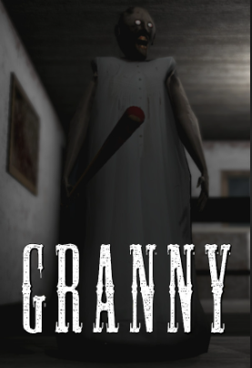
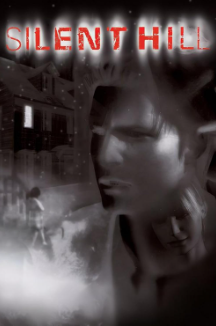

Horror Games
A horror game is a video game genre centered on horror fiction and typically designed to scare the player. The term may also be used to describe tabletop games with horror fiction elements. It is mainly characterized by its intent and atmosphere to invoke fear, disturbances, suspense and unease to those who play it. It has become a major role in interactive entertainment.
A horror game naturally excells at telling stories in a very subtle way. Often by subtle clues or hints scattered around the map or either the story itself, if one has paid attention enough to know it. There are two major sub-genres revolving horror games being psychological horror and survival horror.
The genre is broadly categorized into two sub-genres like previously mentioned before: Psychological horror games like those in the "Silent Hill" series, focus on disturbing the perception of the player and aims to create an uneasy atmosphere for the whole game, to which it does successfully. Meanwhile, Survival Horror, like in the Granny series, focuses more on resource management, awareness and evasion in scenarios filled with threats lurking around the map.
Notable Examples
Granny (2017)
Granny is a survival horror game made by a solo developer named DVloper. The game places the player in a house where they are trapped by Granny. They have 5 days to escape before it's game over. The mixture of elements like the suspense, the unpredictability of the AI and various threats that lurk around the house, not to mention the music present makes Granny arguably the best mobile horror game on the platform.
Silent Hill (1999)
Silent Hill is renowned for its psychological horror, disturbing environments, and haunting soundtrack. The game immerses players in a fog-shrouded town where reality and nightmare intertwine, challenging them to confront both external threats and inner fears. Its narrative depth and atmospheric design set new standards for the genre.
